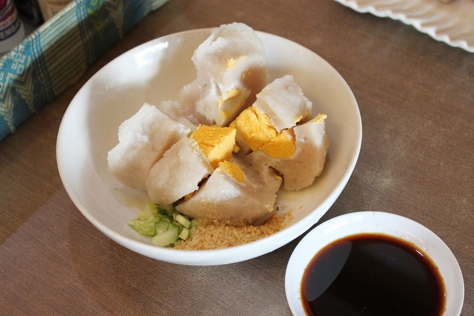

Pempek
Home

Ingredients
- 1 cup ground mackarel
- 2 tbsp cooking oil
- tapioca
- 1 kg palm sugar, diced
- bird's eye chili
- 200 g garlic
- 3 tbsp white vinegar
- salt
- 2 liters of water
Steps
- Mix ground mackarel with water and salt
- Add tapioca until the dough can be kneaded. The more tapioca, the more chewy it will be
- Shape the dough to the taste
- Simmer in a medium heat until pempek floats
- Put the pempek into the cold water
- Simmer together palm sugar and some water until the palm sugar melts and mixes with the water
- Ground the onion and the chili. Add them to the sugar
- Add vinegar and the salt
- Poach in a low heat for an hour until it thickens. Filter and set aside
- Serve pempek with cuko sauce
Image is licensed under CC BY-NC-ND 3.0